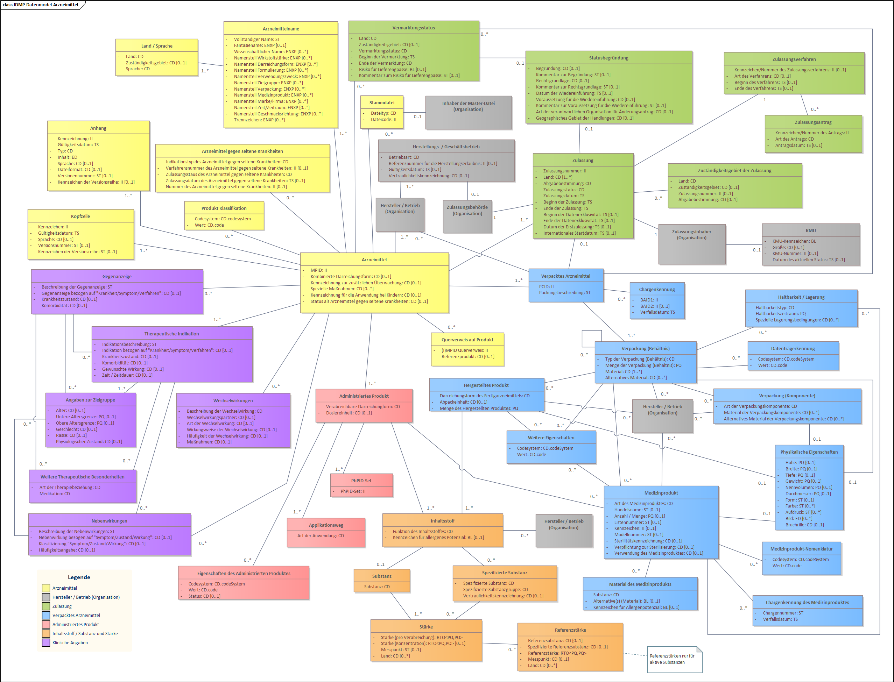

This page is part of the CH EPL (R5) (v1.0.1: DSTU 1) based on FHIR (HL7® FHIR® Standard) v5.0.0. This is the current published version. For a full list of available versions, see the Directory of published versions
ISO IDMP Standard (ISO 11615)
Introduction
ISO 11615 is a standard within the IDMP framework that provides guidelines for uniquely identifying medicinal products. The standard defines a set of data elements and structures to be used for the identification of medicinal products throughout their lifecycle.
The IDMP standard consists of 5 standards:
- ISO 11615: Medicinal Products
- ISO 11616: Pharmaceutical Products
- ISO 11238: Substances
- ISO 11239: Pharmaceutical dose forms, units of presentation, routes of administration and packaging
- ISO 11240: Units of Measurements
For these five ISO standards, there are approximately two dozen associated standards, technical specifications, and technical reports, detailing futher specifications and usecases.
For general use, the main standard ISO 11615 is of relevance only.
The following IDMP wedding cake illustrates how the 5 standards are nested i.e. related to each other.

Fig. 1: IDMP Overview of Standards
Key Components
Key components of ISO 11615 include:
Data Classes
The IDMP standard groups the data elements into approximately 50 classes, each consisting of one or more attributes. The classes are grouped and color-coded:
Medicinal Product – Yellow
Captures high-level information on the product, i.e., the product available at the pharmacy. This section contains the following 9 classes:
- Medicinal Product: Core information of a medicinal product.
- Product Cross-References: References to other products related to this product.
- Product Classification: Classifications and additional identifiers, e.g., ATC code, Index Therapeuticus, Therapeutic Product Code.
- Medicinal Product Name: Details of the product name, including parts of the name.
- Country/Language: Additional information, e.g., the language of the name.
- Orphan Designation: Authorisation status as an orphan product, if applicable.
- Attached Document: Metadata for attached documents, such as the package leaflet.
- Master File: Information on related master files (e.g., pharmacovigilance master files).
- Header: Metadata of the dataset.
Marketing Authorisation – Green
Represents the regulatory approval information, containing 6 classes:
- Marketing Authorisation: Core information provided by the regulatory agency, including authorisation number, legal status of supply, and authorisation status.
- Marketing Authorisation Procedure: Details on the procedure that led to authorisation.
- Marketing Authorisation Application: Type of application (new, renewal, or other).
- Jurisdictional Marketing Authorisation: Used if subdivisions within a country have different authorisation specifications (not used in Switzerland).
- Marketing Status: Information on when a product is marketed or withdrawn.
- Status Reason: Reason for legal actions affecting marketing or authorisation.
Packaged Medicinal Product – Blue
Captures packaging information, including container types, pack sizes, materials, and identifiers (e.g., GTIN). This section contains 13 classes:
- Packaged Medicinal Product: Describes the medicinal product as packaged for sale, with package identifier (PCID) and description.
- Package Item (Container): Physical object of the package (carton, blister, tube), including recursive components.
- Package Component: Additional parts of a container, e.g., closures.
- Data Carrier Identifier: Identifier of the container (e.g., GTIN, NTIN).
- Physical Characteristics: Height, width, depth, weight, shape, etc., of manufactured items, containers, or devices.
- Manufactured Item: The actual item (tablet, liquid, cream) as delivered from the manufacturer.
- Device: Medical device included in the package (e.g., syringe, cup, measuring spoon).
- Device Material: Material(s) of the device, especially if in contact with the product.
- Device Nomenclature: Standardized terminology to uniquely identify the device type.
- Device Batch Identifier: Batch number and/or expiry date of the device.
- Other Characteristics: Additional characteristics of the manufactured item, medical device, or package (e.g., hospital-specific packs).
- Shelf Life / Storage: Shelf life and storage conditions of the container or device.
- Batch Identifier: Batch/lot number and expiry date of the packaged medicinal product.
Pharmaceutical Product – Light Red
Represents the product administered to the patient. For reconstituted products, this is the product after transformation, ready for administration. Contains 4 classes:
- Pharmaceutical Product: Core information such as dose form and unit of presentation.
- PhPID Set: Identifiers based on substance(s), dose form, and strength.
- Route of Administration
- Pharmaceutical Product Characteristics: Additional properties, e.g., abuse potential.
Ingredient – Orange
Defines individual ingredients, specifying role (active vs. excipient), strength, and relationship to the overall product. Contains 5 classes:
- Ingredient: Role and allergenic potential.
- Substance: The substance of the ingredient.
- Specified Substance: Substance with additional info, e.g., manufacturing process.
- Strength: Strength of the substance.
- Reference Strength: Strength of the active moiety (e.g., active part of a salt).
Clinical Particulars – Purple
Information on the effect of administered substances. Contains 6 classes:
- Therapeutic Indication: Intended effect.
- Contraindication: Authorised contraindications.
- Population Specifics: Target population (age, gender, physiological condition).
- Other Therapy Specifics: Usage in relation to other therapies.
- Undesirable Effects: Undesirable effects or adverse events.
- Interactions: Interactions with other medicinal products or factors (e.g., alcohol).
Organisations – Gray
Information on organisations related to manufacturing or authorisation. Contains 5 classes:
- Marketing Authorisation Holder: Organisation bringing the product to market.
- SME: Indicator of size of the authorisation holder.
- Medicines Regulatory Agency: National competent authority.
- Master File Holder: Organisation holding master files.
- Manufacturer / Establishment: Organisations involved in manufacturing from ingredients to finished product.
Identifiers
Main identifiers in IDMP:
- Medicinal Product Identifier (MPID): Assigned by regulatory agency. Identifies the medicinal product.
- Packaged Medicinal Product Identifier (PCID): Assigned by regulatory agency. Identifies specific pack sizes.
- Pharmaceutical Product Identifier (PhPID): Assigned by the Upsala Monitoring Center on request by the regulatory agency. Identifies administered products by substance, strength, and dose form.
- Substance Identifier: Initially UNII (assigned by the FDA, Food and Drug Administraion of the USA) and Substance-ID (assigned by EMA, European Medicines Agency); eventually GSID (assigned by the UMC, Upsala Monitoring Center).
- Organisation Identifier: Identifies agencies, marketing authorisation holders, manufacturers, and distributors. In Switzerland, currently the partner number and the EU ORG-ID/LOC-ID are accepted.
Data Structures
Defines how data elements are structured to ensure consistency and interoperability across systems.
Lifecycle Management
Supports consistent identification throughout the product lifecycle, from development to post-marketing.
Interoperability
Facilitates exchange of medicinal product information among regulators, marketing authorisation holders, and healthcare providers.
Adopting ISO 11615 streamlines regulatory processes, improves patient safety, and enhances information exchange efficiency globally.
ISO 11615 Document
The base data model for this ePL FHIR IG is based on ISO 11615. The standard can be purchased here: ISO 11615:2017
IDMP Datamodel
IDMP Datamodel for Authorised Medicinal Products (English)

Fig. 2: IDMP Datamodel - Authorised Medicinal Products (English)
IDMP Datamodel for Authorised Medicinal Products (German – Switzerland)

Fig. 3: IDMP Datamodel - Authorised Medicinal Products (German – Switzerland)
Usefull Links
ISO
HL7
FOPH
Swissmedic
EMA